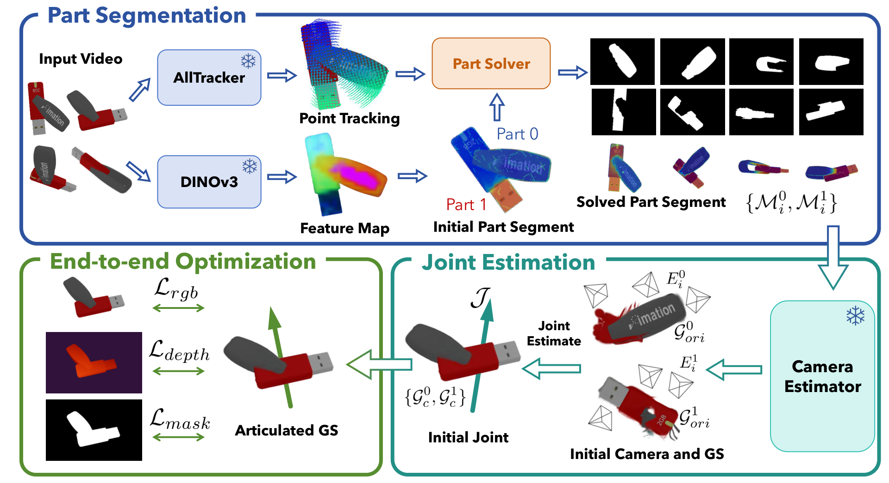
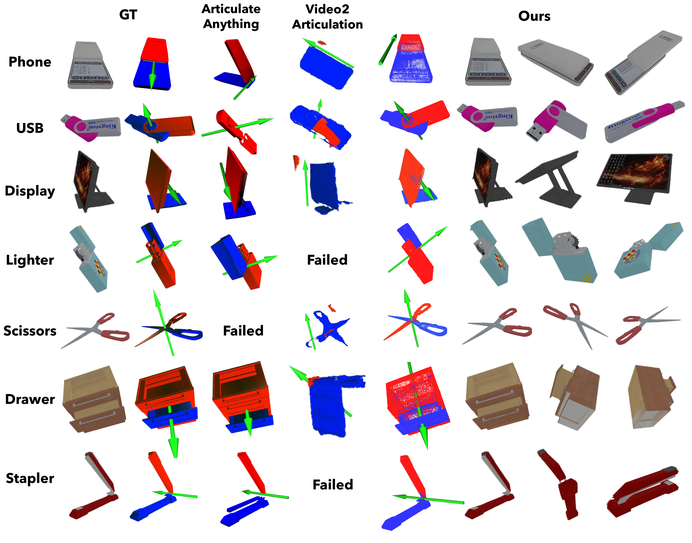
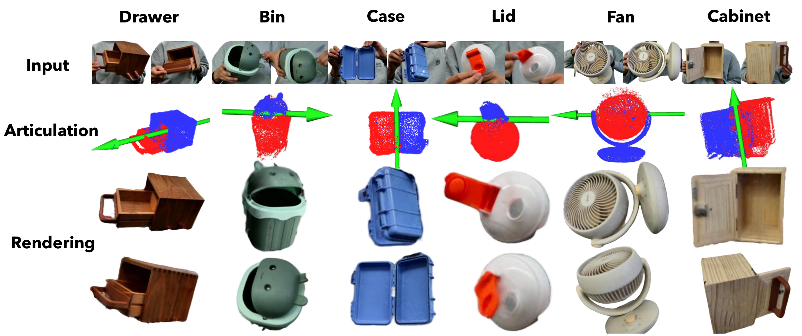

FreeArtGS
简单摘要
对增强现实和机器人技术不断增长的需求正在推动对具有高可扩展性的铰接式对象重建的需求。作者的主线做法是：然而，从离散关节状态或休闲单眼视频重建的现有设置需要非平凡的轴对齐或覆盖范围不足，限制了它们的适用性。
更关键的是，在本文中，我们介绍了 FreeArtGS，这是一种在自由移动场景下重建关节对象的新方法，是一种设置简单且可扩展性高的新设置。从结果上看，FreeArtGS 将自由移动部分分割与联合估计和端到端优化相结合，仅将单目 RGB-D 视频作为输入。


铰接物体广泛存在，并且在我们的日常生活中经常与之互动。作者的主线做法是：构建可交互关节对象的数字复制品不仅可以增强增强现实中的人类体验，还可以减少机器人学习的模拟与真实的差距。
更关键的是，为了有效扩展图形和模拟就绪资产的范围，铰接对象的重建系统应该在简单的设置中实现高可扩展性。从结果上看，通过以自由移动的方式重建铰接对象，捕获对象并完全覆盖对象姿势和关节状态，从而产生可交互、可模拟的资产。
核心创新
这篇工作的创新不是简单堆模块，而是把问题重新定义为：首先，熵惩罚鼓励近二元分配，其次，为了防止模型拟合不稳定的点跟踪结果，我们通过对跟踪点处的每像素图像特征进行采样并连接半径来构建特征空间邻居图-。
第二个关键新意在于：为了统一物体到相机的姿势，我们通过刚性变换将两个部分的姿势校准到规范坐标系，该变换在第一帧中作为 的倒数给出。这使方法不只是能生成结果，更能解释为什么会有效。
再往后看，通过对齐两个部件，它们的轨迹在第一帧中共享相同的轴，并且 和 的相对变换表示关节状态和轴的组合。这也是它和纯工程拼装方案拉开差距的地方。
技术细节
方法主线可以概括为：我们分别重建两部分的高斯 和 ，粗略估计关节参数 ，并将 和 校准到规范高斯。
其中最关键的一环是：我们执行混合渲染并通过端到端优化来微调高斯和联合参数。这样设计直接带来的作用是：通过这些轨迹，我们进一步优化每个零件的刚性变换和零件重量。
从训练和推理角度看，作者还特别处理了：我们跨窗口传播优化的零件权重，通过特征空间邻居填充未观察到的像素，并通过对零件权重进行阈值化来获得二进制零件掩模。
$$ \begin{aligned} \mathcal{L}_{\mathrm{main}} &= \sum_{p} (1-w_{t,p})\rho\left(\frac{\big\|T^0_{0\to t}X_{0,p}-X_{t,p}\big\|}{\big\|X_{0,p}-X_{t,p}\big\|+\epsilon}\right) \\ &\quad+ w_{t,p}\rho\left(\frac{\big\|T^1_{0\to t}X_{0,p}-X_{t,p}\big\|}{\big\|X_{0,p}-X_{t,p}\big\|+\epsilon}\right), \end{aligned} $$
这组公式用于定义模型中的变量关系和训练目标。建议先看左侧要预测的对象，再看右侧每一项如何约束优化方向。
$$ \mathcal{L}_{\mathrm{ent}}=-\sum_{p}\Big[w_{t,p}\log w_{t,p}+(1-w_{t,p})\log(1-w_{t,p})\Big]. $$
该公式用于定义核心计算关系。阅读时先看左侧目标量，再看右侧由 L、p、t、p 等变量构成的约束和聚合方式。
$$ \mathcal{L}_{\mathrm{smooth}}=\sum_{p}\sum_{q\in\mathcal{N}(p)}\alpha_{pq}\,\big|w_{t,p}-w_{t,q}\big|. $$
该公式用于定义核心计算关系。阅读时先看左侧目标量，再看右侧由 L、p、q、N 等变量构成的约束和聚合方式。
$$ \mathcal{L}_{\mathrm{init}}=\sum_{p}\mathrm{BCE}\!\left(w_{t,p},\,w_{0,p}\right). $$
该公式用于定义核心计算关系。阅读时先看左侧目标量，再看右侧由 L、p、t、p 等变量构成的约束和聚合方式。
$$ \mathcal{L}=\lambda_m\mathcal{L}_{\mathrm{main}} +\lambda_s\mathcal{L}_{\mathrm{smooth}} +\lambda_e\mathcal{L}_{\mathrm{ent}} +\lambda_{\mathrm{init}}\mathcal{L}_{\mathrm{init}}. $$
这组公式用于定义模型中的变量关系和训练目标。建议先看左侧要预测的对象，再看右侧每一项如何约束优化方向。
$$ T_i= \begin{cases} T(\theta_i;u,o) = \big[R(u,\theta_i)\mid(I-R(u,\theta_i))o\big],\\[6pt] T(d_i;u) = \big[I\mid d_i u\big]. \end{cases} $$
该公式用于定义核心计算关系。阅读时先看左侧目标量，再看右侧由 T_i、T、u、o 等变量构成的约束和聚合方式。
$$ \textstyle \mathcal{G}_i = w(\mathcal{G}_c \circ I)\cup(1-w)(\mathcal{G}_c\circ\mathcal{J}_i). $$
该公式用于定义核心计算关系。阅读时先看左侧目标量，再看右侧由 G、w、G、I 等变量构成的约束和聚合方式。
$$ \textstyle \hat{\mathcal{I}}_i=\mathcal{R}\big(\mathcal{G}_i,{K}_i,{E}_i^{ref}\big) $$
该公式用于定义核心计算关系。阅读时先看左侧目标量，再看右侧由 I、R、G、K 等变量构成的约束和聚合方式。


实验结论
实验主要围绕一个核心问题展开：我们评估我们的方法在以下数据集上的重建性能。
从主要对比结果看，由于没有现有的自由移动关节对象重建基准，为了评估我们的方法，我们提出了 FreeArt-21，这是一个新基准，包含来自 PartNet-Mobility 数据集的 7 个不同类别（5 个旋转和 2 个棱柱）的 21 个对象。定性结果和消融实验进一步说明：我们在六个日常铰接物体上评估我们的方法，包括五个旋转关节物体和一个棱柱关节物体。
理解评价
从整篇论文看，它的真正贡献是：在本文中，我们介绍了 FreeArtGS，这是一种在自由移动场景下重建关节对象的新方法，是一种设置简单且可扩展性高的新设置，而不是单纯把扩散模型继续微调。作者把问题落在“分布外驾驶场景如何稳定生成”这个更关键的缺口上。
它最有说服力的地方在于：实验结果表明，FreeArtGS 在重建自由移动的铰接物体方面始终表现出色，并且在以前的重建设置中保持高度竞争力，证明其是现实资产几何的实用且有效的解决方案。这说明论文的方法链路——3D 点云编辑、车辆补全、再到 RL 后训练——是前后闭合的，而不是各模块各自堆叠。
主要局限在于：FreeArtGS 仍然有一些限制。如果继续往前推进，一个自然方向是把更长时序、更低成本训练和更广泛的 OOD 场景覆盖一起纳入统一评估。
以下相关论文可作为延伸阅读：